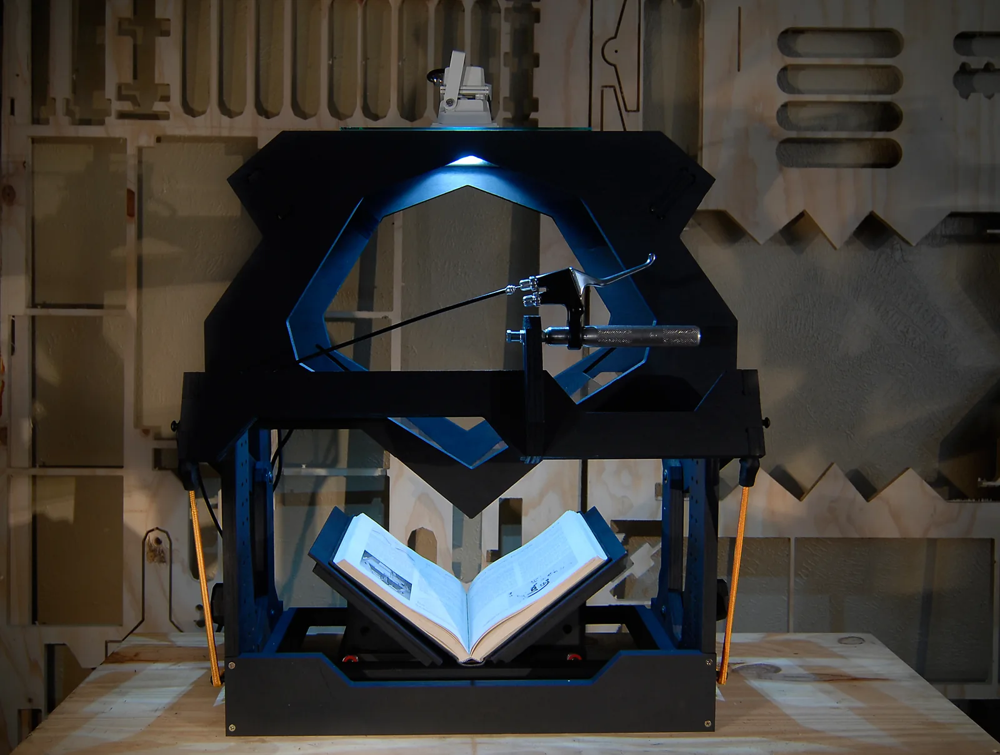
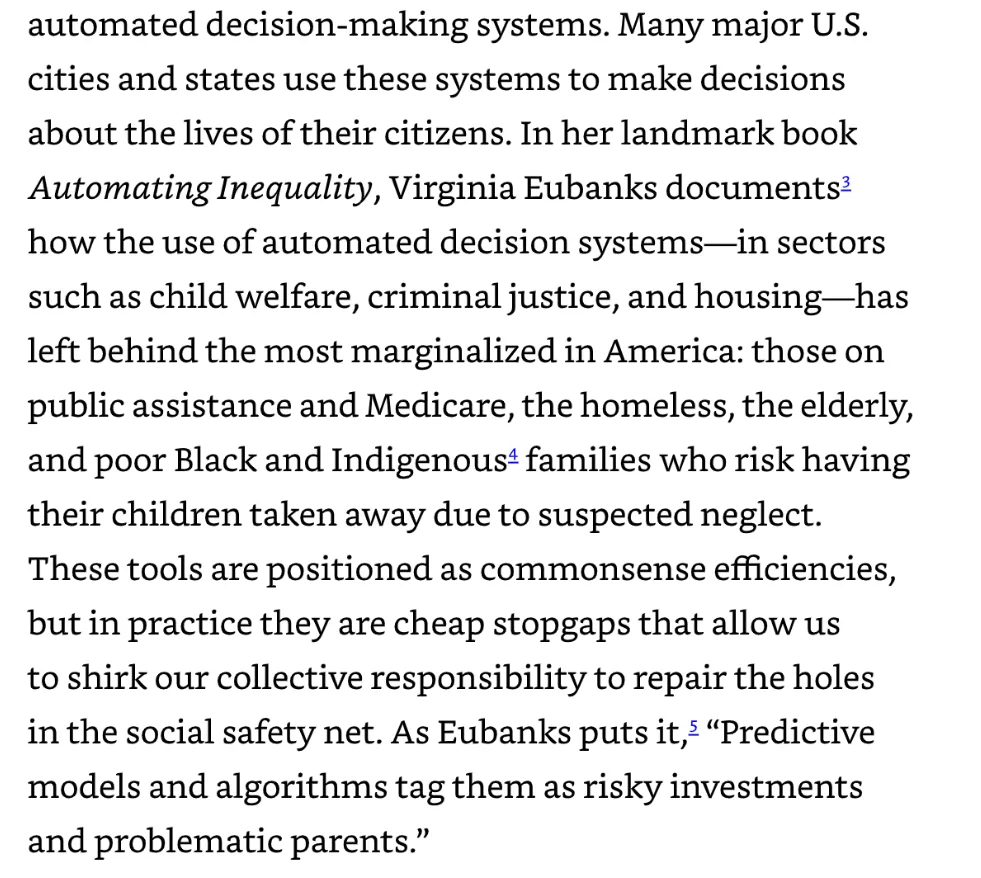
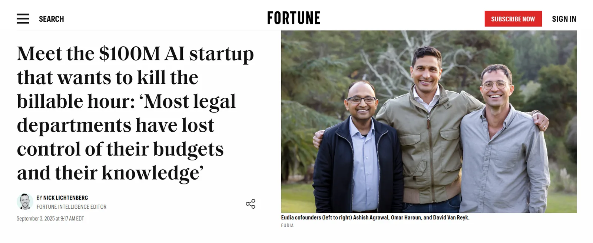
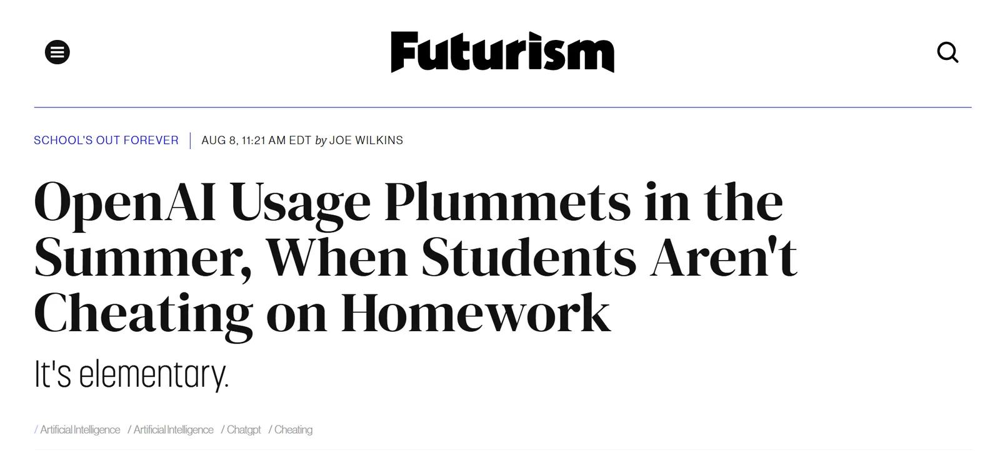
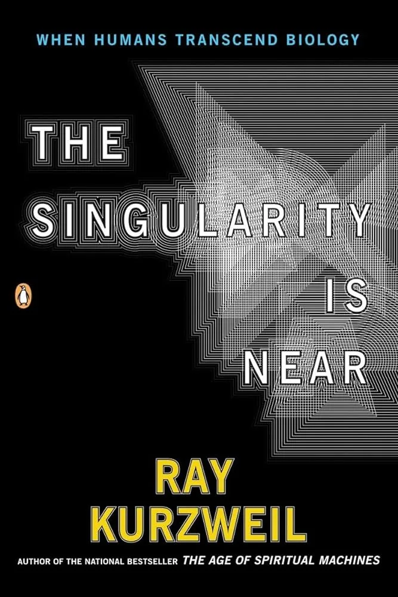
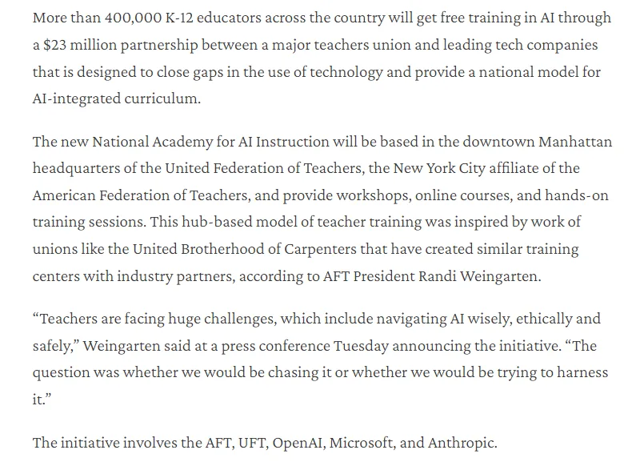
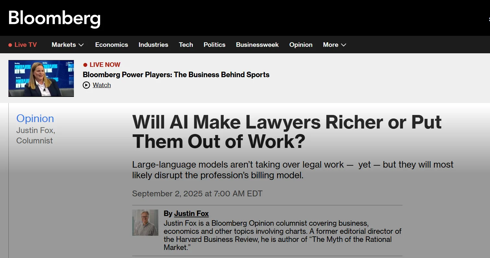
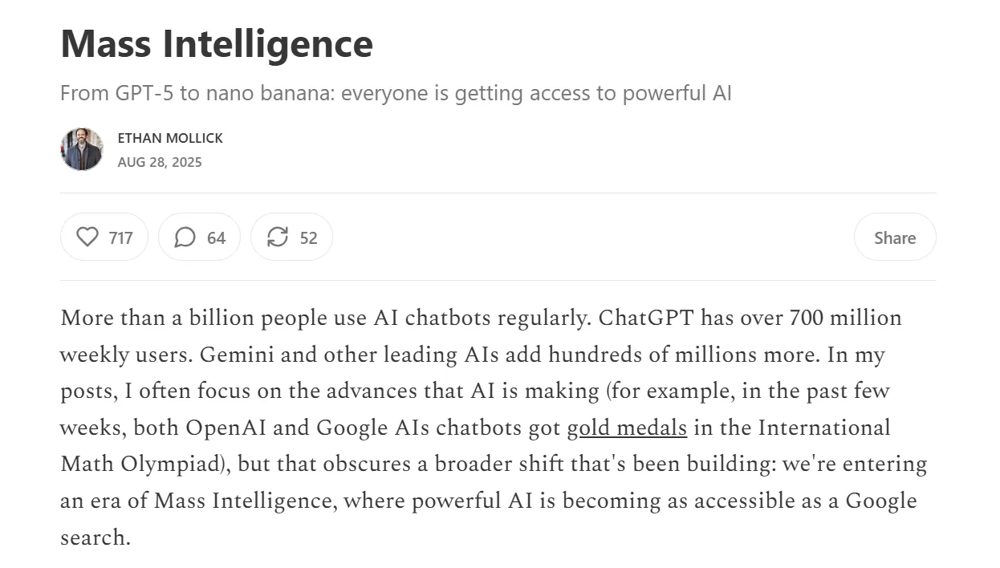
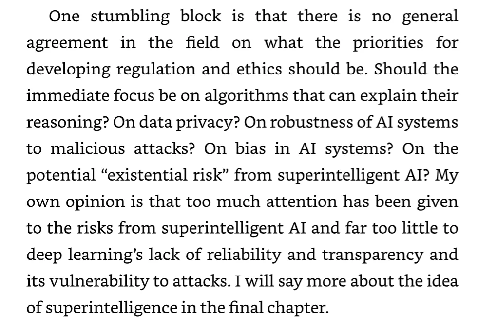

AI for Textual Analysis
Wednesday, May 27, 2026 · 10 AM – noon · CHDR
Part 1
Moretti, Underwood, the Voyant tradition. What Claude Projects adds: persistent context across multi-turn conversation, multi-file uploads, native handling of mixed formats.

Field check
Three quick scenes from professional reading practices already on the move.


Before the demo
Distant reading at this scale was always built on hidden labor. With LLMs, the labor moved — but didn't vanish.

Time reported that OpenAI had subcontracted Kenyan workers making less than two dollars a day to filter out gore, hate speech, child sexual abuse material, and pornographic images from ChatGPT and OpenAI's image-generation tool.
— Bender & Hanna, on the labor that made the chatbot polite

Part 2
A small corpus I have not opened before. We walk: preprocessing → bag-of-words → key phrases → comparative passages → thematic network.
Live demo
Watch the iteration. Notice when I push back, ask Claude to reconsider, point out a mistake. The iteration is the humanities work.
Exercise
Using the three-to-five-text corpus you brought:
The point of this exercise is not the visualization. The point is the iteration. Notice when you have to push back, refine, ask Claude to reconsider. That iteration is the actual humanities work — and it is teachable.
— Pedagogical note for Workshop 2


Part 5
Where did Claude help? Where did it hallucinate? What would a student need to know before they used this for an assignment in your course?

The Project you built today is yours. Add to it across the semester; it's the closest thing this workshop offers to a portable workspace.